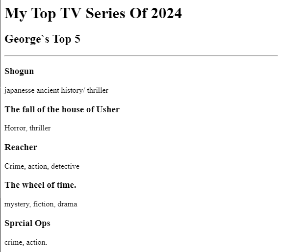

Alright, so a lot of TV series was released this year; and just like every other movie lover, I think i`ve seen majority of em`(probably 79% or thereabout). And yes, they weren`t all great. So I`ve made a list of my top movie series of the year, so go ahead and check them out and lemme know what you think!
The party is gonna be litttt!